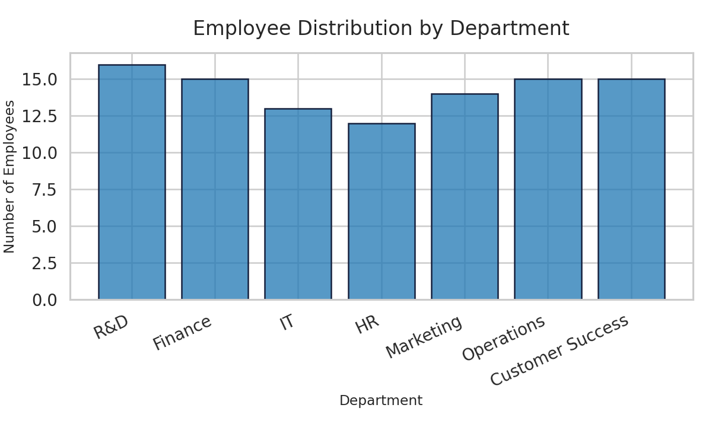

IT department employee count: 13
Dataset records analyzed: 100
Analyst contact: 23f2000340@ds.study.iitm.ac.in
import html
from pathlib import Path
import pandas as pd
import seaborn as sns
import matplotlib.pyplot as plt
# Analyst contact: 23f2000340@ds.study.iitm.ac.in
def main(csv_path: str = "employees.csv", html_path: str = "analysis.html") -> None:
data = pd.read_csv(csv_path)
it_count = int((data["department"].str.upper() == "IT").sum())
print(f"IT department count: {it_count}")
sns.set_theme(style="whitegrid", context="talk")
plt.figure(figsize=(10, 6))
ax = sns.histplot(
data=data,
x="department",
discrete=True,
shrink=0.8,
color="#1f77b4",
edgecolor="#16213e",
)
ax.set_title("Employee Distribution by Department", fontsize=20, pad=18)
ax.set_xlabel("Department", fontsize=14)
ax.set_ylabel("Number of Employees", fontsize=14)
plt.xticks(rotation=25, ha="right")
plt.tight_layout()
figure_path = "department_histogram.png"
plt.savefig(figure_path, dpi=120)
source_code = Path(__file__).read_text(encoding="utf-8")
escaped_code = html.escape(source_code)
html_content = f"""
<!DOCTYPE html>
<html lang=\"en\">
<head>
<meta charset=\"utf-8\">
<title>Employee Performance Distribution</title>
<style>
body {{ font-family: 'Segoe UI', Arial, sans-serif; margin: 2rem; background: #f8fafc; color: #0f172a; }}
h1 {{ color: #1d4ed8; }}
.metric {{ margin-top: 1.5rem; font-size: 1.1rem; }}
img {{ margin-top: 1.5rem; max-width: 100%; height: auto; border: 1px solid #cbd5f5; box-shadow: 0 2px 6px rgba(15,23,42,0.15); }}
pre {{ background: #0f172a; color: #f8fafc; padding: 1rem; border-radius: 6px; overflow-x: auto; }}
code {{ font-family: 'Fira Code', 'Consolas', 'Courier New', monospace; font-size: 0.9rem; line-height: 1.4; }}
</style>
</head>
<body>
<h1>Department Mix Overview</h1>
<p class=\"metric\">IT department employee count: <strong>{it_count}</strong></p>
<p class=\"metric\">Dataset records analyzed: <strong>{len(data)}</strong></p>
<p class=\"metric\">Analyst contact: <a href=\"mailto:23f2000340@ds.study.iitm.ac.in\">23f2000340@ds.study.iitm.ac.in</a></p>
<img src=\"{figure_path}\" alt=\"Histogram of employee counts per department\">
<h2>Python Script</h2>
<pre><code class=\"language-python\">{escaped_code}</code></pre>
</body>
</html>
"""
with open(html_path, "w", encoding="utf-8") as f:
f.write(html_content)
if __name__ == "__main__":
main()